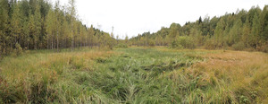
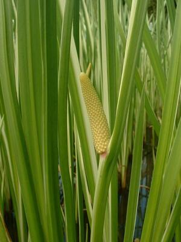

ⲁϩⲣ, ⲁϩⲣⲉ S, ⲁϧⲓ, ⲁⲭⲓ B nn m, marsh herbage, sedge: Ge 41 2 B ⲁϧⲓ (var ⲁⲭⲓ) ἄχει (var ἕλος), ib 18 S ⲁϩⲣⲉ = B ⲁⲭⲓ مرج, Is 19 7 ⲁϩⲣ ⲉⲧⲟⲩⲉⲧⲟⲩⲱⲧ = B ⲁϧⲓ نبات, Si 40 16 S ⲁϩⲣⲉ ⲉⲧ- (var ⲁϩⲣ ⲉⲧ-) ἄχει. In Job 8 11 same Heb אחו = βούτομον. Cf ⲃⲉϭⲏⲛ.


ⲁⲭⲓ B v ⲁϩⲣ.
ⲁϧⲓ, ⲁⲭⲓ B v ⲁϩⲣ.
ⲁϩⲣ, ⲁϩⲣⲉ S, ⲁϧⲓ, ⲁⲭⲓ B nn m, marsh herbage, sedge: Ge 41 2 B ⲁϧⲓ (var ⲁⲭⲓ) ἄχει (var ἕλος), ib 18 S ⲁϩⲣⲉ = B ⲁⲭⲓ مرج, Is 19 7 ⲁϩⲣ ⲉⲧⲟⲩⲉⲧⲟⲩⲱⲧ = B ⲁϧⲓ نبات, Si 40 16 S ⲁϩⲣⲉ ⲉⲧ- (var ⲁϩⲣ ⲉⲧ-) ἄχει. In Job 8 11 same Heb אחו = βούτομον. Cf ⲃⲉϭⲏⲛ.
| view | ⲥⲏⲃⲉ, ⲥⲏϥⲉ S ⲥⲏⲃⲓ, ⲥⲉⲃⲓ B ⲥⲏϥⲓ F ⲥⲃ- S | (noun feminine) reed [καλαμος]
greave [κνημις] shin-bone kohl bottle1374 |
| view | ⲕⲁϣ SB ⲕⲉϣ AF ⲕⲉϣ- B | (noun masculine/feminine) reed [καλαμος, καλαμη]
― as stalk ― as pen ― as shin-bone ― as staff to lean on ― as plough-pole ― as stem (of candelabra) ― as paling as adj891 |
| view | ⲕⲁⲙ SB ϭⲉⲙ (?) Sa ⲕⲏⲙ Sf | (noun masculine) reed, rush [θροιον]805 |
| view | ⲃⲉϭⲏⲛ, ⲃⲉϫⲏⲛ B | (noun) a rush [βουτομος]2745 |
| view | ⲧⲣⲃⲏⲓⲛ, ⲧⲏⲣⲃⲏⲓⲛ, ⲧⲉⲣⲃⲉⲉⲓⲛ, ⲧⲉⲣϥⲉⲉⲓⲛ, ⲧⲉⲣⲃⲁⲉⲓⲛ S | (noun masculine) papyrus plant [βουτομον]1625 |
| view | ϫⲟⲟⲩϥ S ϭⲟⲙϥ, ϭⲟⲛϥ B | (noun masculine) papyrus [παπυρος]2474 |
| view | ⲉⲣⲃⲓⲛ B | (noun masculine) papyrus2750 |